Некоторые автомобили Skoda предусматривают наличие роботизированной коробки передач. К главным преимуществам DSG можно отнести почти мгновенное переключение скоростей, а также сочетание динамики с удобством в управлении. Если вы нуждаетесь в ремонте ДСГ Шкода, ждем вас в нашем автосервисе! Мы предлагаем услуги обслуживания и качественных ремонтных работ по доступным ценам.
Когда требуется ремонт DSG Skoda?
Есть несколько причин, по которым водители осознают срочность ремонта коробки:
- Вибрация и шумы в КПП при включенном моторе;
- Вибрация кузова при переходе на вторую передачу;
- Пробуксовка при наборе скорости;
- Отсутствие плавного движения с места;
- Толчки и рывки при понижении скорости;
- Машина вовсе не сдвигается с места.
При образовании подобных ситуаций рекомендуется незамедлительно обратиться в сервисный центр. Если не обращать внимания на эти причины, могут появиться более серьезные последствия, устранить которые обойдется дороже.
Стоимость ремонта ДСГ Шкода
Ниже представлена таблица, исходя из которой, вы сможете рассчитать приблизительную цену ремонтных работ DSG.
Ремонт DSG 7
| Ремонт мехатроника* | Замена сцепления | Замена вилки включения передач* | Замена темп плат | Обновление прошивки | Адаптация коробки | Масляный сервис |
| Монтаж/демонтаж мехатроника | Монтаж/демонтаж коробки | Монтаж/демонтаж коробки | Монтаж/демонтаж мехатроника | Диагностика блока на ошибки | Диагностика блока на ошибки | Снятие/установка поддона |
| Ремонт мехатроинка | Замена сцепления | Разборка/сборка коробки | Замена плат температуры | Проверка обновлений | Адаптация коробки | Снятие/установка фильтра |
| Установка уровня масла | Установка уровня масла | Установка уровня масла | Установка уровня масла | Обновление прошивки | Проверка на ошибки | Установка уровня масла |
| Адаптация | Адаптация | Адаптация | Адаптация | Пробная поездка | Пробная поездка | Осмотр |
| 43 500 руб. | от 14 000 руб. | 40 000 руб. | - | от 3 000 руб. | 2 400 руб. | 2 400 руб. |
* Включая стоимость запчастей
Ремонт DSG 6
| Ремонт мехатроника | Замена сцепления | Ремонт механики* | Замена печатных плат | Обновление прошивки | Адаптация коробки | Масляный сервис |
| Монтаж/демонтаж мехатроника | Монтаж/демонтаж коробки | Монтаж/демонтаж мехатроника | Монтаж/демонтаж мехатроника | Диагностика блока на ошибки | Диагностика блока на ошибки | Снятие/установка поддона |
| Ремонт мехатроинка | Замена сцепления | Ремонт мехатроника | Замена плат температуры | Проверка обновлений | Адаптация коробки | Снятие/установка фильтра |
| Установка уровня масла | Установка уровня масла | Установка уровня масла | Установка уровня масла | Обновление прошивки | Проверка на ошибки | Установка уровня масла |
| Адаптация | Адаптация | Адаптация | Адаптация | Пробная поездка | Пробная поездка | Осмотр |
| от 15 000 руб. | от 15 000 руб. | от 30 000 руб. | от 10 000 руб. | от 3 000 руб. | 2 400 руб. | 2 400 руб. |
* Включая стоимость запчастей
Срок ремонта ДСГ
Большинство автосервисов предлагают устранение неисправностей коробок по низким ценам, но затягивают процесс, а в редких случаях и вовсе сдают некачественную работу заказчику. За долгие годы работы мы зарекомендовали себя как надежный сервисный центр, получили массу благодарных отзывов от клиентов и положительную репутацию.
Даем гарантии того, что ваш автомобиль не задержится у нас больше трех дней. А при замене запчастей используем только оригинальные автозапчасти и комплектующие. Наши специалисты имеют богатый опыт в автомеханике, они проведут полный спектр обслуживания и диагностики авто, после чего составят план работы и начнут ремонт.
Доверьте ремонт ДСГ Skoda профессионалам!
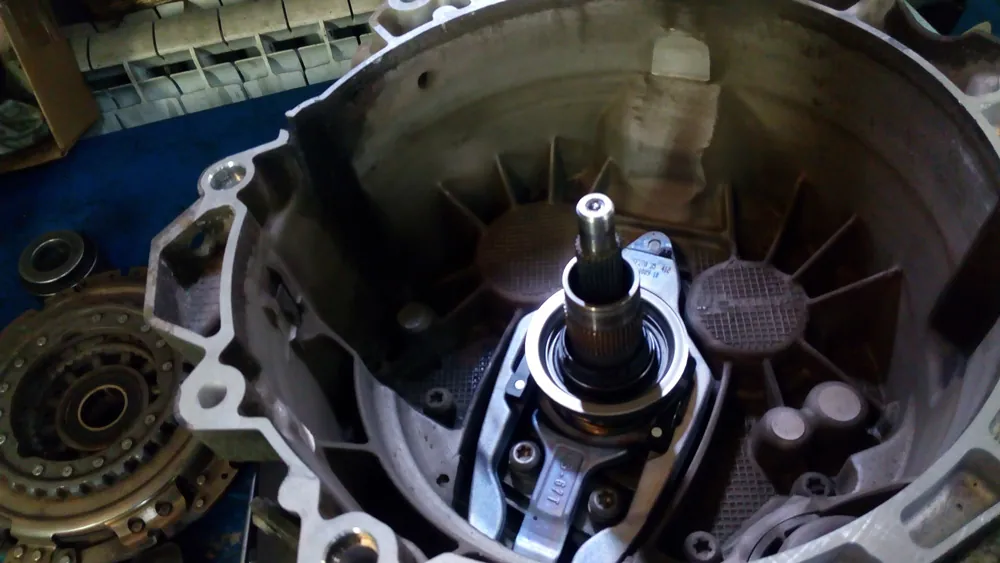
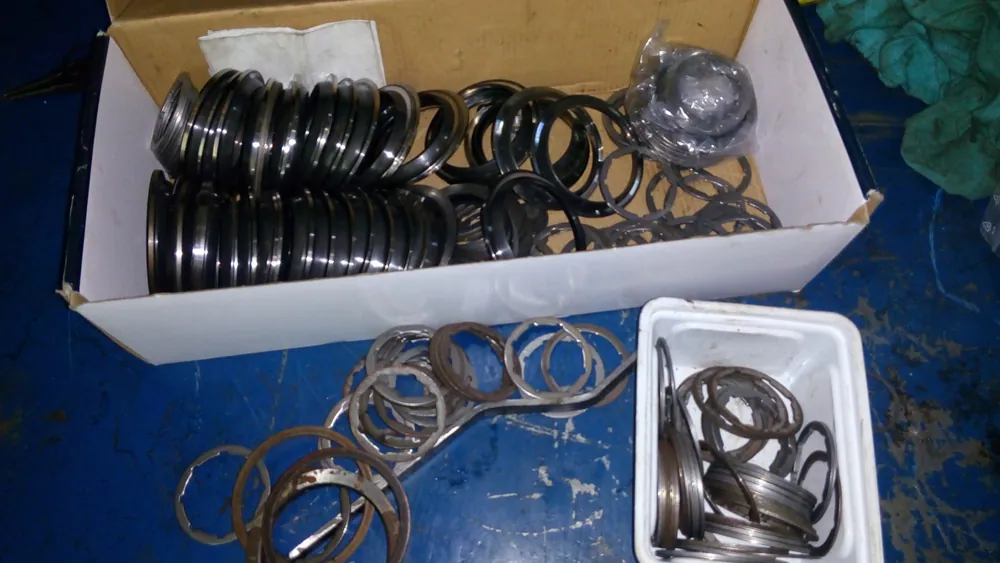
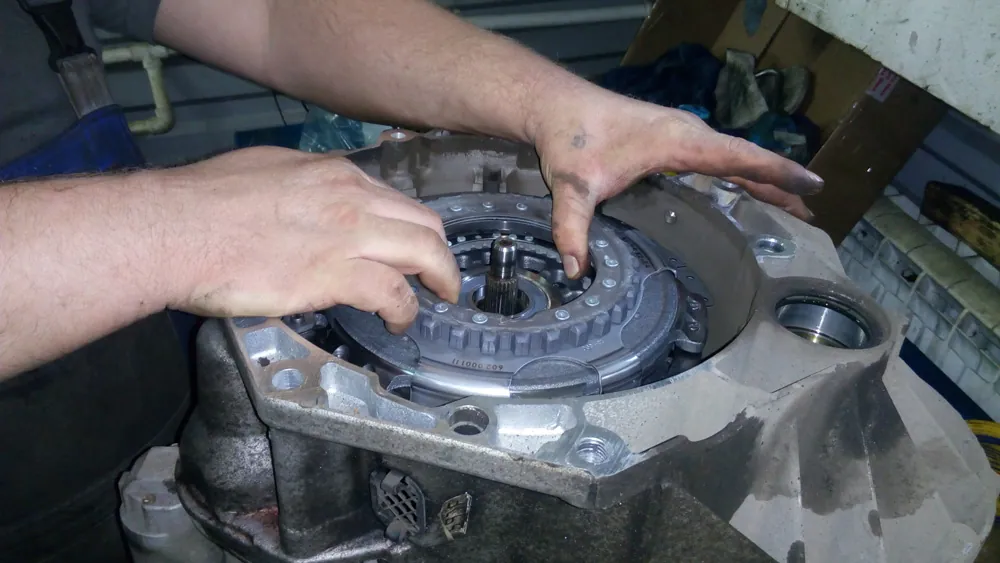
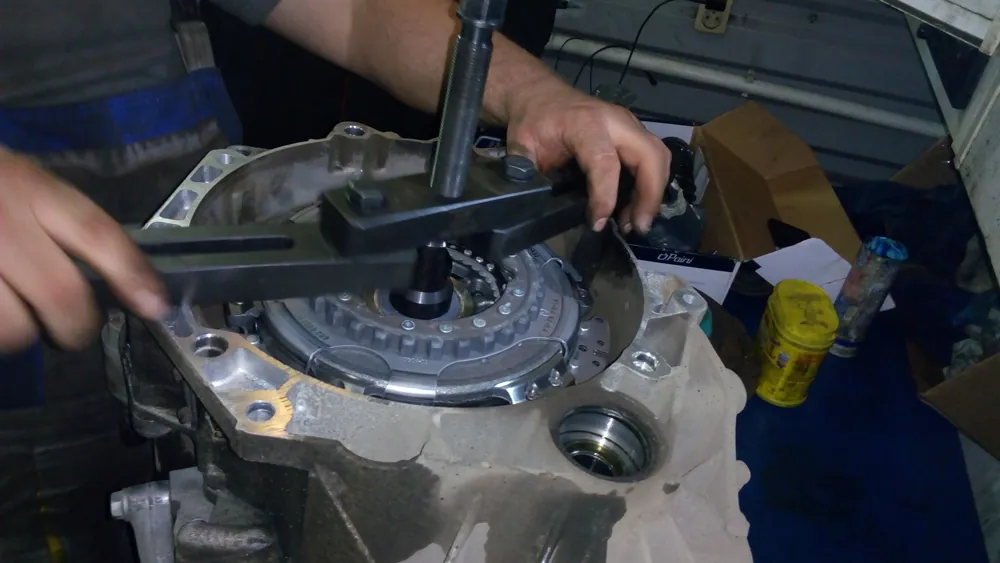
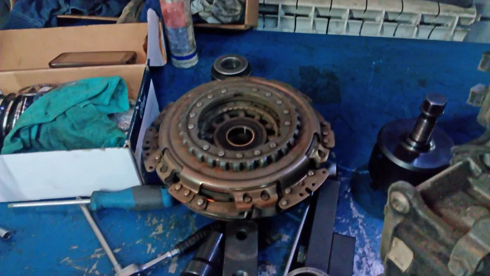
Преимущества нашего автосервиса
Удобное расположение
Собственный склад запчастей
Выполняем работы в срок
Гарантия качества работ
Галерея
Есть вопросы — спрашивайте!
Не стесняйтесь, Наши специалисты помогут Вам, окажут бесплатную консультацию или запишут на посещение Нашего автосервиса.
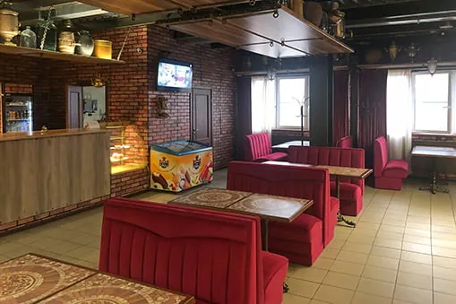
Кафе - выставка самоваров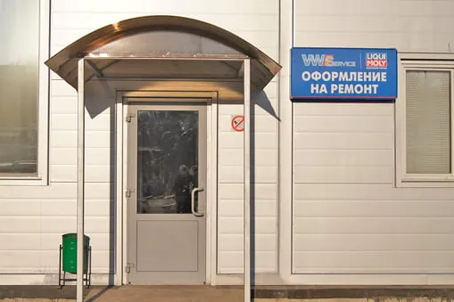
Как нас найти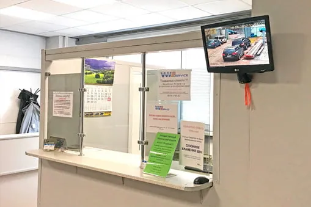
Сервис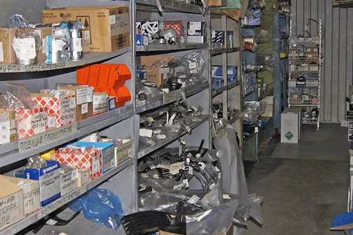
Склад автозапчастей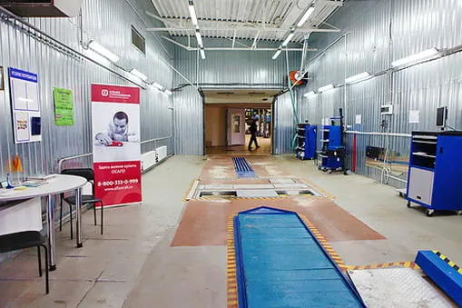
Линия техосмотра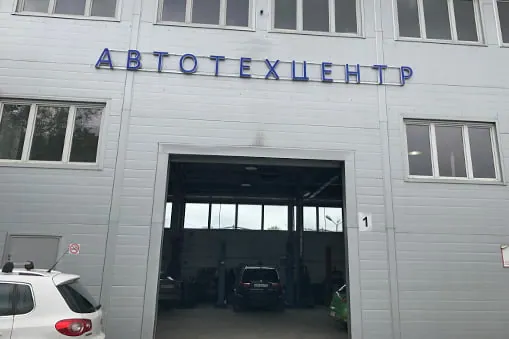
Ремонтные зоныДругие работы
Контакты
- г. Москва, 1-й Дорожный проезд, д. 5АЮАО Москвы. Ближайшее метро — «Южная»
- Ежедневно с 8:30 до 20:30Без выходных. Приём автомобилей — круглосуточно
- +7 (495) 260-06-02Эвакуатор: +7 (495) 796-29-99